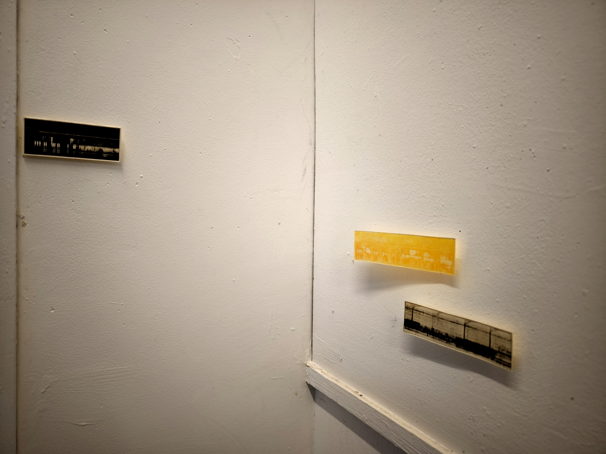
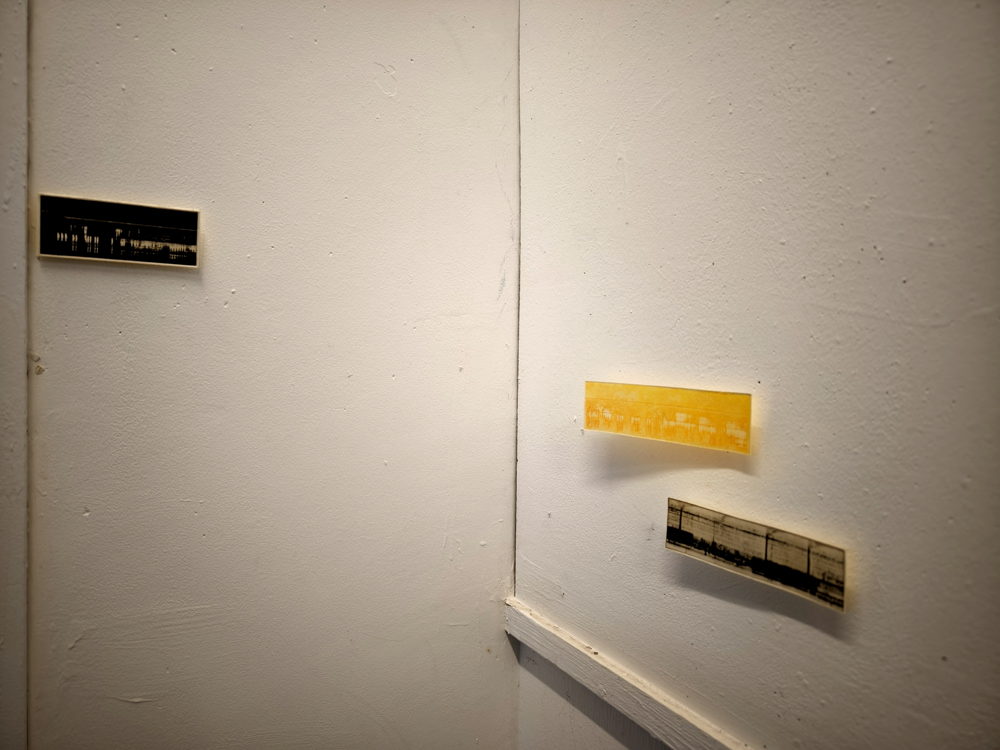
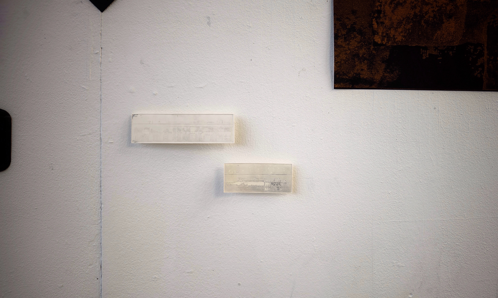
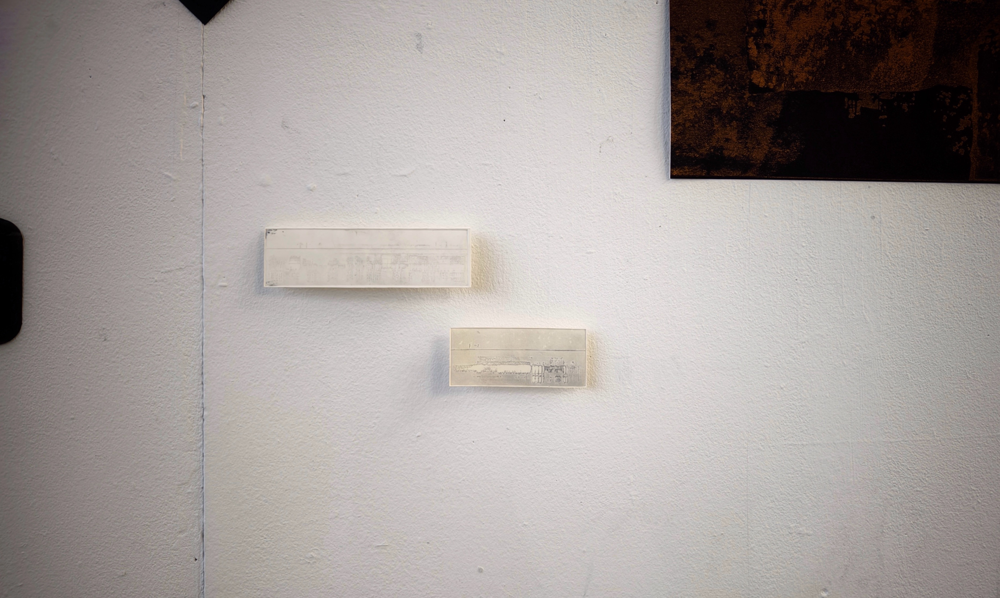
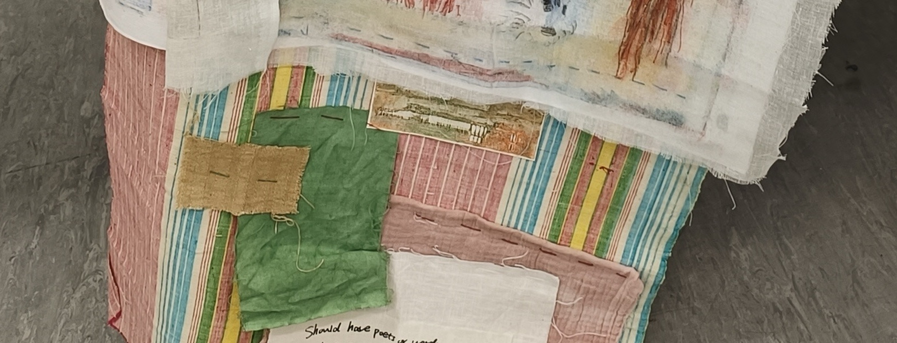
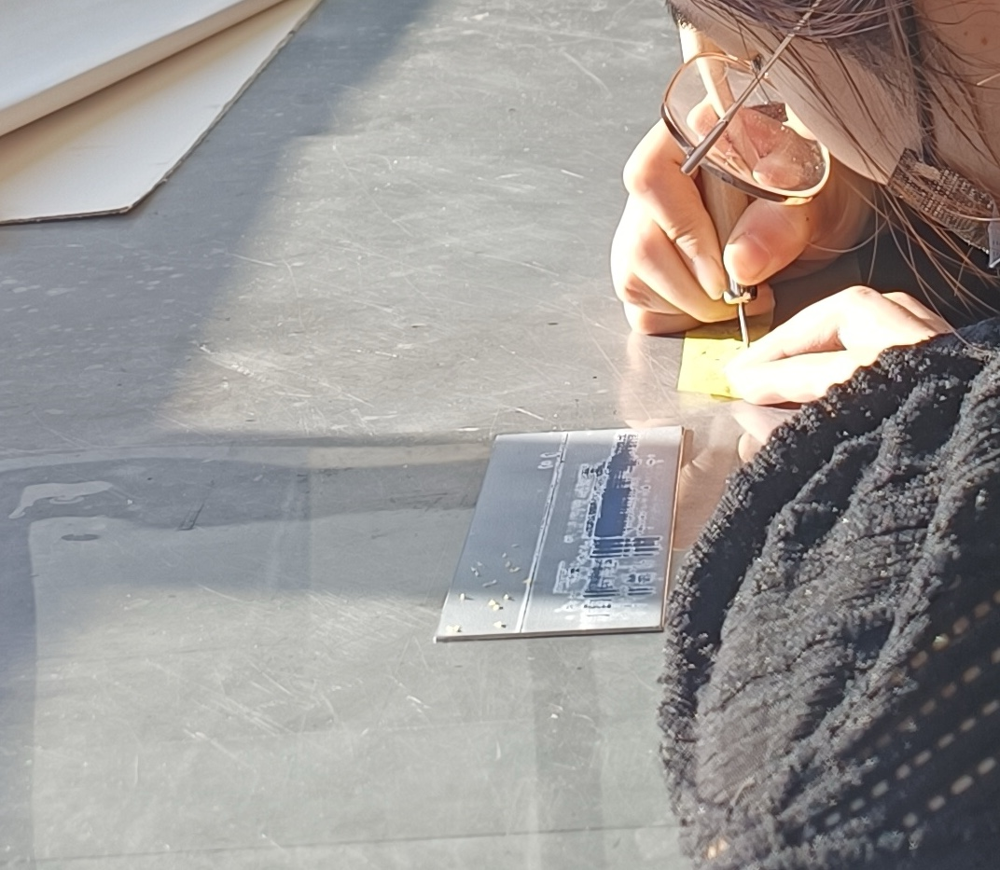
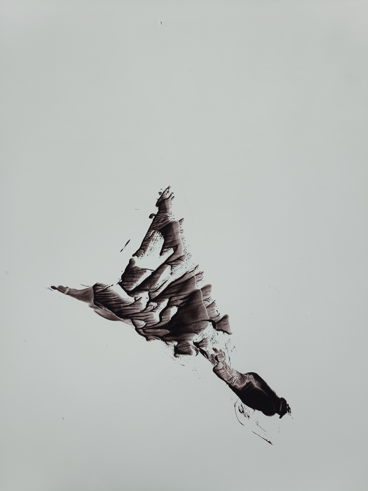
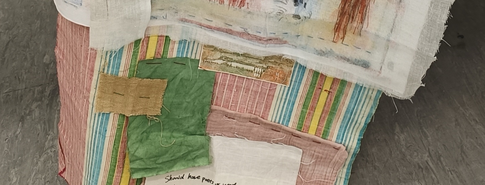
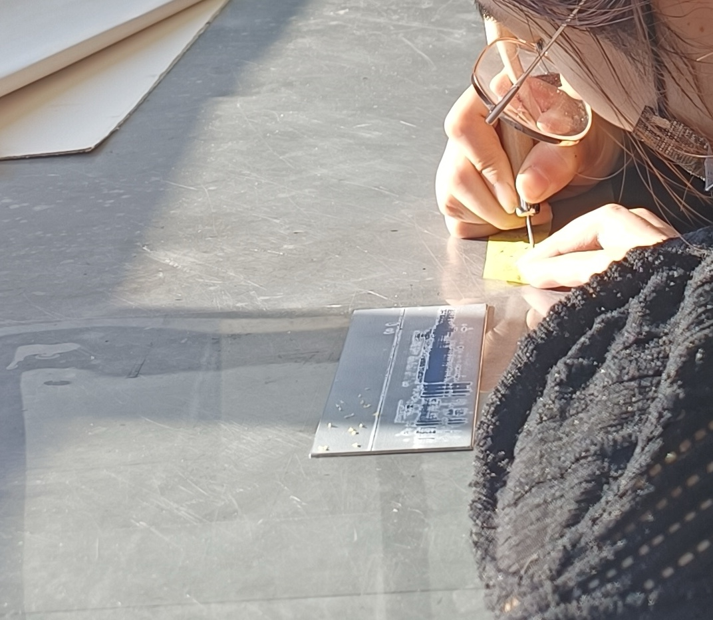
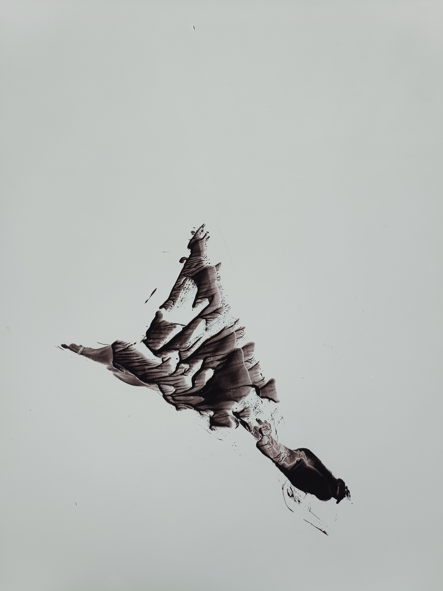

 

 





> Series

Track (Unit 1)
(ongoing) Digital Painting, Photopolymer Gravure

Back Home
Mixed-media

Step-bite practice
Etching and Pastel
> Single Pieces
Exploration and Experimentation with Different Printmaking Mediums


Track (Unit 1)
(ongoing) Digital Painting, Photopolymer Gravure
> Work archive


> Process
Experimented with and Practiced Various Printmaking Techniques and Modes of Expression, and ultimately Settled on Polymer.

First Recorded the Common Birdsongs from Different Areas (Urban, Suburban, and Forest)

Selected different types, processed them on the computer by denoising, cutting, editing, and arranging the audio tracks, and finally composed them into soundtracks that achieved the visual effect I envisioned.
Processed the audio by applying a discrete Fourier transform for each frame, extracting spectrograms to visualize the sound data.
Technical reference: https://www.youtube.com/watch?v=-Yxj3yfvY-4
In a sense, I tend to lean toward a minimalist cityscape when working on the composition, forming impressions of sound-originating areas.
However, I wish to maintain an openness in interpretation, inspiring more reflections on scenes of industrialization and nature, such as subway tracks, the reflection of the Thames, or rows of trees.
Transferred the patterns, experimented with different etching techniques with Brian's support, until achieving the desired result.
> Pop Up Show
During this process, I discovered many meaningful ways to communicate and exchange ideas. I received a variety of comments on my artwork.
The tech teachers provided valuable insights and suggestions regarding the handling of visuals, while my classmates gathered to discuss the amount of information within the compositions and their final structures.
I truly enjoyed hearing viewers speculate whether the visuals were related to the audio tracks, as well as their interpretations of the artwork's themes.
My work represents "sound," and simultaneously, I received many different “voices” from the audience. This, I believe, is precisely what I hoped to achieve.
During the exhibition, Jo and Leo shared their perspectives on displaying, curating, and selecting my work. Their input taught me a great deal, as I had almost no prior knowledge in this area. I also came to realize how crucial the presentation of an exhibition is for delivering an intended experience to the audience—something that cannot be ignored.
My smaller pieces were displayed on different walls and in various areas, which, I believe, successfully conveyed the sense of spatiality I aimed for.
In another instance, I combined one of my artworks with a classmate’s fabric project and hid it in a separate space. It served as a small interaction and was somehow fun to explore.
Back Home
Mixed-media
My initial attempts at exploring different methods of expression.
Began with the idea of telling a story about life and death through a narratively driven video in a comic style.
In this work, I chose to emphasize the human voice.
After the tutorial, I realized that this approach still seemed to collapse my intended meaning to some extent.
Attempted to shift away from the idea of bluntly telling a story.
Meanwhile, birdsong was combined with robots as 'the other' to create this series.
And during this time my interest in working with transparent media grew.
However, I have yet to find a satisfying sense of harmony in this approach, so the video project has been put on hold for now.


Step-bite Practice
Etching and Pastel
An (Incomplete) Record of Technique Practices

> Critical Reflection
> Introspections on the Foundations of Creation: Symbiosis, Connection, and Communication
All these experiences and reflections have crystallized into three key themes.
I have long been interested in the relationship between nature and man. My childhood in a rural village nestled among mountains in China, where I had close daily interactions with various flora and fauna.
The pandemic lockdown offered a new perspective on this connection. It is a period of intense loneliness and personal turmoil for me. In the midst of physical exhaustion and political restrictions, my only connection seemed to be with my pet parrot and houseplants. While they remained untouched by the massive social upheaval, this tranquility was underpinned by my financial situation. Meanwhile, I also witnessed how natural forces could override social constructs, and how social constructs overwhelmed individual lives with natural forces. This phenomenon is a perfect reflection of the complexities of living in the Anthropocene.
Since Michel Foucault's The Order of Things (1970) introduced the metaphor of historicity and the discontinuity of knowledge as resembling beach sand shaped by waves, many eco-philosophers have critiqued anthropocentrism and argued for a more egalitarian perceptual relationship between humans and the natural world.
Although Joy introduced me to this concept, I remain, perhaps inevitably, a partial practitioner of posthumanism, as my work is rooted in a mirrored "alterity". Meanwhile, she also recommended a book by James Bridle, Ways of Being (2022), which explores the nonhuman world "suddenly alive with intelligence and agency" while humanity is "utterly entangled with the more-than-human world". He argues that we must learn to live with the world rather than trying to dominate it.

For his work, the future lies in the relationships and connections between the human and non-human worlds. For me, my initial experience of arriving in London alone and adapting to a drastically new environment paralleled the pandemic period, and also with only pets and plants as companions. the "non-human" part must be them.
In focusing on animals, I have been noticing Roger Ballen's photographic work, particularly the metaphors he portrays in the relationship between South African communities and their pets. When I look at my companions, whose inner worlds I cannot fully comprehend, as the animal philosopher Jacques Derrida noted in The Animal That Therefore I Am (2008), "the gaze embodies the concept of alterity-the recognition of the other as different from oneself." He argues that the moment of being seen by his cat, which prompts a profound inquiry into self-awareness and identity, animals represent an absolute otherness that challenges human self-awareness.
And I've come to realize that I cannot escape using 'the other' to narrate human stories, despite my attempts to transcend it.
This is an interesting phenomenon that I found my thinking may have mixed with some existential reflections. Albert Camus' discussion in The Myth of Sisyphus (1955) of the struggle between the individual and the constraints of society. The dependent relationship between humans and flora or fauna in urban environments reflects this conscious or unconscious resistance, or even perhaps escape, yet it serves as a means of navigating social frameworks and redefining personal identity. The individual's task, much like that of Sisyphus, is to navigate societal expectations through consciousness and resistance. Engaging with the collective unconscious of society, meanwhile finding ways to connect one's own values and beliefs.
This is related to the juxtaposition of the "superego" and the "id. In Tang Dynasty China, Zhang Zao has a famous saying, "外师造化，中得心源，" (Lidai Minghua Ji). It means to learn externally from nature and internally from the source of the heart. For me, this means that if I want to get something from the outside world as an expression of myself, it has to be the "Id". I would argue that the essence of art is the continued articulation and communication of the most primal and authentic self as a means of negotiating between social constraints and individual authenticity.
> Sound Practice
The visual theme of Unit 1 gradually took shape.
My goal is to create a sense of communication through sound, an experience that activates the perception of visual-auditory illusions. This experience is designed to transcend geographical and temporal boundaries, presenting a visible representation of changes in time and space. Sound, as the most accessible means of communication beyond text, serves as the foundation for this exploration.
Then I learned from William Kentridge's work and animated films, which offered a direct and pure approach to storytelling through sound. Making videos was an enjoyable process; I loved seeing things come to life through movement. However, I have yet to find a satisfying harmonic balance in this approach.
Meanwhile, I am exploring another method that emphasizes the relationship between sound and space (environment), and how different entities receive sound differently.
As I sought out more posthumanist work, Suzanne Anker's creations inspired me to think more deeply about how to "write" layers of information into an image. This shifted my focus to embedding meaning and complexity in visual forms, enriching the dialogue between sound and image.
> The Subject of "The Other": Birds
Birds retain their mysterious migratory patterns and ubiquitous presence in both urban and rural soundscapes, creating a linear structure marked by strong regional characteristics and variations.
I want to explore how birds inhabit both human-dominated environments like cities and nature-dominated spaces like forests, using them as a medium to symmetrically break the dichotomy between these two contrasting realms. Additionally, my personal records of birdwatching in the wild provide a rich archive of observations, and moving to London introduced me to a completely new ecological setting. The coexistence of birds and humans in urban spaces highlights regional contrasts, offering a fresh perspective.
Human birdwatching, in a way, acts as an anchor point. That fleeting moment becomes a snapshot, forever defining not only the place and birds but also your state of mind at the time—how you felt and how you viewed life.
In my work I want to experiment with different ways of emphasising the relationship between sound and space (or environment), and to explore how different beings perceive sound. This notion of difference is not limited to humans and birds, but extends to the diversity among humans themselves: like John Cage, he advocated random procedures in music, incorporating found sounds, noise and alternative instruments into his compositions.
I was fortunate to be introduced to the work of Victoria Arney, an artist deeply concerned with the resonance of land and place. Her practice of capturing birdsong and sound waves using sonograms inspired me to think about how sound waves are received differently by different species and individuals. Her use of large-scale woodcuts and decorative patterns on large canvases made a deep impression on me and encouraged me to consider how material, scale, and meaning might intersect in my own work.
If John Cage and Suzanne Anker made me realise that I could and should visualise the informational qualities of sound, Victoria Arney's approach to sound waves made me see sound almost as a raw material, rather than just a component used exclusively in video. And I begin to consider how different creatures and individuals might experience the reception of both information. I hope to reflect these differences not only between humans and birds, or on a biological level, but also between humans themselves - as receivers, as audiences with distinct minds capable of nuanced communication.
> Etching Print
One of the valuable opportunities I encountered after arriving at Camberwell was access to resources that allowed me to learn and use photoetching. This technique is remarkable in its profoundly Anthropocene nature: a fusion of modern technology and natural corrosion, materialised on a single metal plate.
I have always believed that drawing is a way of communicating with the world without a specific language. Although I also write, I often feel that when something is expressed through words, it collapses into ordinary letters and characters and loses its essence. Ideally, I hope that a painting can be what it means, relying on its own intrinsic rationality as a subject.
The resources available in London have allowed me to delve deeper into this concept. Inspired by the colours of Impressionism, I have printed many layers and different tones on the plates to create atmospheres that reflect different times of day. However, I am not entirely satisfied with the final result and hope to have more time to explore a sense of balance. Not just the connection between sound, and I want to focus more on printmaking and exploring materials, working on larger pieces.


Bibliographic references:
1. Foucault, M. (1970). The Order of Things: An Archaeology of the Human Sciences. London: Tavistock Publications.
2. Jacques, D. (2008). The Animal That Therefore I Am. Frence: Éditions Galilée.
3.Camus, A. (1955). The Myth of Sisyphus. London: Hamish Hamilton Limited.
4. Yanyuan Z. (Tang). Lidai Minghua Ji(The records of famous paintings of different dynasties).
5. Reed, D. A. (2017). Hearing: An Introduction to Psychological and Physiological Acoustics, 6th Ed. Boca Raton.
6. Robert J. D. (2000). Comparative Hearing: Birds and Reptiles: 13 (Springer Handbook of Auditory Research, 13). Springer.
7. Edward R. (2001). The Visual Display of Quantitative Information, 2nd Ed.
8. Tania K. (2014). Drawing Water: Drawing as a Mechanism for Exploration. Fruitmarket Gallery.
9. Christof M, Brandon L. (2001). Writing Aloud: The Sonics of Language. Errant Bodies.
10. Su Xiu, Zhu Xi. Progress in research of birdsong. Journal of Zhejiang Forestry College, no. 3, 2006, pp. 323-327
11. Karin V. M. (1993). The Sound of Painting: Music in Modern Art. London: Prestel. 128pp.
12. Paul R. (2011). Sensuous Geographies: Body, Sense and Place. London: Routledge.
> Course Contexts
> Visuals and Materials
Installation view of the series Tensed Muscles,
Hand-drawn coloured pencil drawing on plywood
with collaged C-Type prints, 2021
Image courtesy of Sid Motion Gallery and the artist.
Photo by Andy Keate, 2021
My first lecture at Camberwell was given by Steffi Klenz, an artist who combines “social photography” with data-based approaches. I found her formal compositions highly engaging. I often wonder: how can we get viewers to spend more time gazing at a single image? Or, to invert the question, why do I myself linger on certain images? To me, painting is fundamentally driven by visuals—structure, color, texture, and tangible qualities are all decisive factors in holding the viewer’s attention. I have always felt my work lacks a sense of design and compositional rigor, and Steffi’s interplay of points, lines, and planes adds a strong “formal beauty” to her images. She also stressed that her work is very basic in its focus on “communication” and “language,” referencing Freud’s idea that the body speaks. Meanwhile, I recall Wolfgang Tillmans mentioning in a past lecture that “I guess when one talks about art and making art it is by nature language driven. But visual art is not primarily driven by language and there is a dichotomy in that when one is, on the one hand, constantly forced to talk about it, and language seems to favor ideas, and, on the other hand, one also shouldn’t blindly follow any idea that comes to mind. It’s a difficult equilibrium.”
installation, laser etching with graphite and ink on paper,
individual paper sheets 120cm x 80cm,
installation sizes variable
Steffi Klenz highlighted the concept of “visual language,” and in her own work seeks a balance between natural language and the visual realm. Whether a piece is abstract or figurative, the final output is always figurative in some sense. Upon seeing it, viewers instinctively resort to “natural language” to identify the subject: “What is this? Why is it depicted in this way?” This relates to the issue of “information load.” If an artwork contains too much information, viewers may identify it in an instant and lose interest. If it contains too little, they might either dismiss it immediately or pause to repeatedly confirm their perceptions. For a creator aiming to resonate with the right audience, the second scenario is often more desirable.
Susan Sontag, in her essay Against Interpretation, notes that form and content in an artwork should not be separated, as over-interpretation can obscure the piece’s true essence. This mirrors the questions I contemplated during Johanna Love’s lecture and tutorials: How does one handle the amount of content in an artwork? The dust research creates a lot of content,, while I often find myself torn between pursuing an aesthetic framework or a cognitive one in my own practice.
graphite powder, Series of seven drawings,
22 x 15.4 cm / 8 5/8 x 6 in (unframed) each, 2021
Anna Barriballz’s explorations with various media expanded my perspective considerably. She values the physicality of materials and the aspect of time spent observing them. This made me reflect on how my images might convey these qualities. I was particularly struck by her “After Image” series. I like the feeling of holding a small piece work in one’s hand, and especially the layering of multiple levels of her works. In that series, each underlying graphite drawing becomes more visible with every layer of transparency, reflecting a focus on the drawing process, the materials, the interplay of light and darkness, and an awareness of space and time—all without emphasizing a specific “theme.” I also spent some time experimenting with transparent layers in my own imagery, although I tend to lean toward a more interactive, comic-like style. And those research works don't do a good job of showing the end result. Still, may there is no single standard for how to approach media and imagery; it is an ongoing journey of exploration and revision. At the same time, I hope to avoid “ineffective thinking” and ensure that each attempt contributes to a deeper understanding of imagery and materials.
Liu Qiongyu
Deeply interested in nature, religion, mysticism and alchemy, exploring the connection between humanity and the world in the Anthropocene era. On the one hand, about self-satisfaction - finding a connection to the world as a small individual. On the other hand, it is about imagining a future of coexistence. Nature feels like an anchor for humanity, and perhaps this perceived difference is itself a form of connection.
Drawn to stories of coexistence where each life is both small and significant, revealing the intrinsic patterns and mysteries of life. Open to hearing and sharing stories, and always will be.
Striving to explore honest emotions, to discuss the raw self—exposing the red flesh beneath the skin, pressed onto a glass slide. Aspiring to carve entire universes onto the tip of a feather.
Balancing different forms of expression as a cartoonist, illustrator, and printmaker, seeking harmony between narrative and expression.